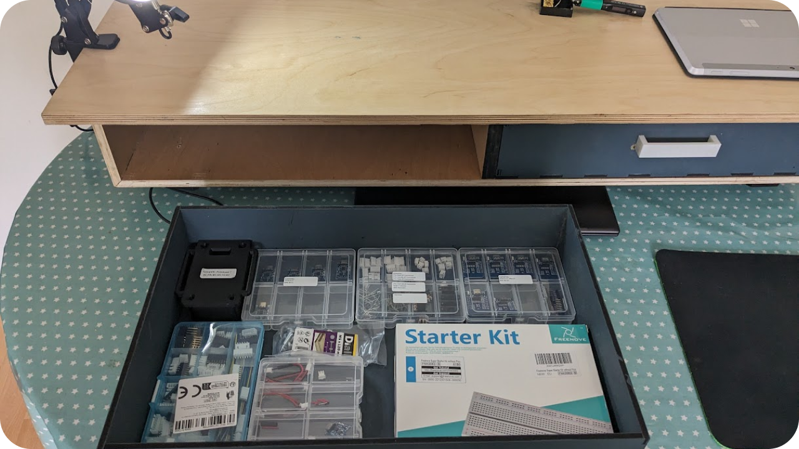
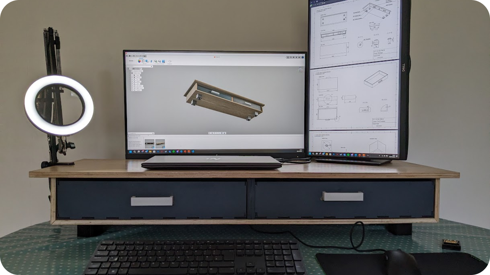

A minimalistic desk shelf for storing all of your essentials at an arms reach, designed in Fusion 360 with files made available on github.
Figure 1: Desk shelf rendered in Fusion 360
Desk2 is designed as an oversized desk shelf to fit all of your essentials in front of you while you work. The shelf features two slide out drawers, that are felt lined to protect your valuables inside. A sturdy outer shell provides additional protection while also serving as a stable resting place for your monitor, allowing it to be raised for better ergonomics.
Figure 2: Drawer in use, filled with various electronic components
Spanning just over 1m wide, with it's large proportions, this desk shelf is especially well suited to large desks and gaming setups, where it will fit it perfectly, even when using two monitors side to side. At 30cm deep, the shelf will leave ample room on most large desks for your acsessories, keyboard, and mouse.
Figure 3: An early photo of Desk2 configured with 2 monitors
Desk2 was designed with the principle of a desk for your desk firmly in mind, creating a desk shelf that is unique in both scale and design from others currently available on the market.
Desk2 is made from a variety of different materials. The outer shell is made from birch plywood, chosen for it's strength, aesthetic, and affordability. The surface is finished to a shine through careful surface preparation, varnishing, and a top coat of beeswax, which helps to also protect the surface from scratching or staining.
The drawers are made with the help of a CO2 laser cutter.